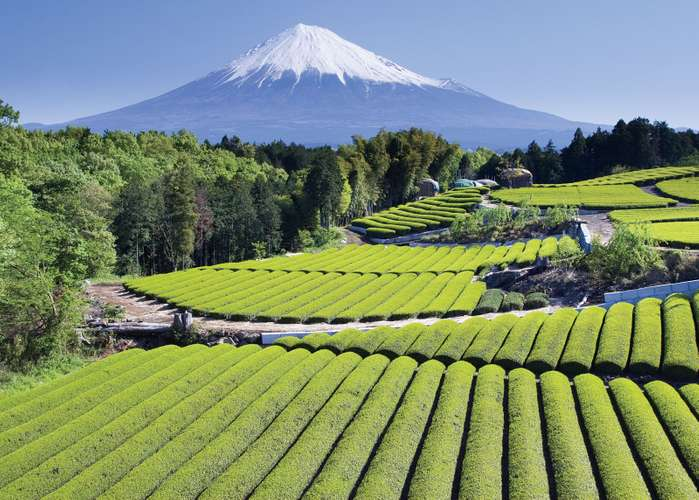

Tea, beverage produced by steeping in freshly boiled water the young leaves and leaf buds of the tea plant, Camellia sinensis. Two principal varieties are used, the small-leaved China plant (C. sinensis sinensis) and the large-leaved Assam plant (C. sinensis assamica). Hybrids of these two varieties are also grown. The leaves may be fermented or left unfermented.
See all videos for this article
According to legend tea has been known in China since about 2700 BCE. For millennia it was a medicinal beverage obtained by boiling fresh leaves in water, but around the 3rd century CE it became a daily drink, and tea cultivation and processing began. The first published account of methods of planting, processing, and drinking came in 350 CE.
Around 800 the first seeds were brought to Japan, where cultivation became established by the 13th century. Chinese from Amoy brought tea cultivation to the island of Formosa (Taiwan) in 1810. Tea cultivation in Java began under the Dutch, who brought seeds from Japan in 1826 and seeds, workers, and implements from China in 1833.
“A cup of tea would restore my normality." ~Douglas Adams